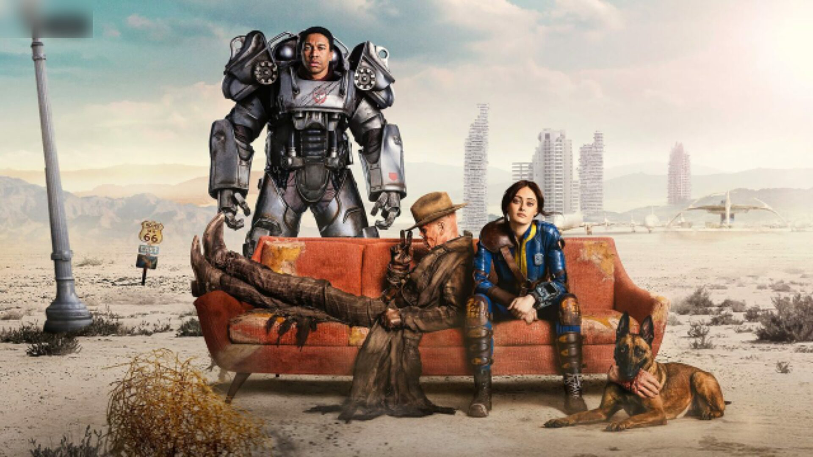
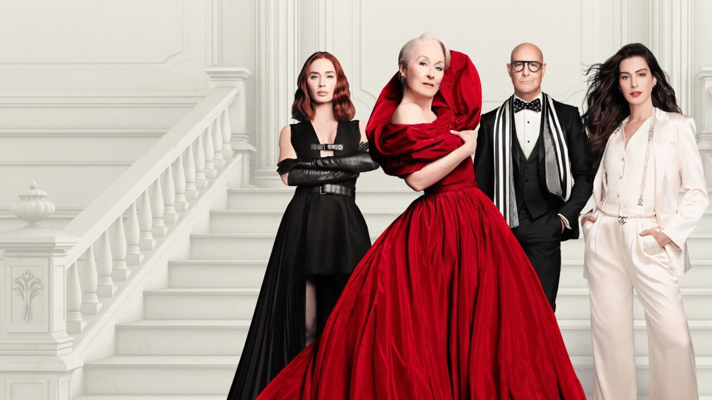

Proposta para menu, rail, Social e Fontes ornarem com a ilha do relógio: miolo escuro translúcido, luz suave no canto, sombra curta, sem contorno, raio grande. Foco = superfície clara; acento só para estado (página ativa, marca, selo).
Fundo: Arte = a imagem do título por trás · Sóbrio = cinza escuro liso · Imersivo = só as cores da arte, misturadas
1. Menu aberto
Ilha do relógio no topo, menu como ilha flutuante logo abaixo, mesma margem e material. Foco = superfície clara, página ativa = ponto no acento.

20:19H
2. Rail recolhido
O mesmo menu fechado vira uma pílula vertical de ícones alinhada à ilha.
20:19H
Série · 2024
Fallout
S2 E3 · Continuar de onde parou · 22 min
3. Social
Sidebar do Social como ilha à direita: abas segmentadas, atividade em linhas com rosto e capa, foco sem contorno.
20:19H
4. Fontes
A folha nova no mesmo material: flutuando com margem e raio da ilha, em vez de colada na borda.
20:19H
5. Ilha do relógio
Os quatro estados da mesma pílula: relógio, cartão ao vivo, aviso e o modal que cresce dela.
Repouso
20:19H
Cartão ao vivo
20:31Fallout T1 E332 min
Aviso
3 avisos novosabre
Modal (a ilha cresce)
Fallout
T1 E3 · The Head
Num futuro pós-apocalíptico, Los Angeles devastada por uma guerra nuclear; os sobreviventes vivem em abrigos subterrâneos.
32 min restantes
Mesma pílula em todos os estados: cresce por mola, nunca troca de material. Botões do modal descem para dentro dela (a linha de botões fica na base do retângulo crescido).
6. Spotlight
Busca como duas ilhas centradas: o campo e os resultados. Foco sem contorno, só superfície.
the preVoz: segure OK
Melhor resultado
The Prestige
2006 · 130 min · Filme · ★ 8,5
Drama · Mistério
OK abre
Títulos
The Devil Wears Prada 2
2026 · 119 min · Filme · ★ 6,4
The Invite
2026 · 107 min · Filme · ★ 7,8
The Martian
2015 · 141 min · Filme · ★ 8,0
The Wrecking Crew
2026 · 125 min · Filme · ★ 6,4
OK abreVoltar volta ao campo
7. Modais
Confirmação e menu do cartaz no mesmo material; botão focado no acento, linha focada em superfície clara.
Continuar assistindo
Tirar Fallout da fileira?
O progresso fica guardado. O título volta sozinho quando sair episódio novo.
Todo modal é uma ilha: mesmo miolo, luz e raio. Botão em foco = pílula cheia no acento (o mesmo das Fontes); linha de lista em foco = superfície clara, como menu e Social.
8. Agenda
Linha do tempo com o dia no acento; cartões de vidro, o focado só mais claro (hoje é branco cheio). Lembrete vira chip de estado.
Agenda
4 séries com data confirmada · 7 acompanhadas
QUA
16
hoje
QUI
17
amanhã
SÁB
19
em 3 dias
QUA
4/11
em 7 sem.
Foundation
T3 E9 · The Last Empress
Final da temporada · Apple TV+ · 58 min
Gaal e Salvor chegam a Trantor no dia em que o Império anuncia o fim da linhagem genética.
Lembrete ativo
The Last of Us
T2 E4 · Day One
HBO · 52 min
Lembrar-me
Severance
T3 E1 · The Other Half
Estreia da temporada · Apple TV+ · 47 min
Lembrete ativo
Andor
T3 E1
Estreia da temporada · Disney+ · 44 min
Lembrar-me
9. Biblioteca
Abas no seletor segmentado das Fontes/Social, filtros como chips de vidro, grade de cartazes; foco levanta o cartaz com sombra, sem contorno.
Biblioteca
14 títulos · sua watchlist do Trakt
TRAKT
TipoTodosOrdemDa listaExibirCartaz
CODA
Killers of the Flower Moon
Duna: Parte Dois
Aftersun
Tudo em Todo Lugar
O Brutalista
John Wick 4
Anora
Pobres Criaturas
Oppenheimer
Past Lives
Zona de Interesse
Ripley
Shōgun
10. Busca
Campo e teclado como ilhas à esquerda (tecla focada no acento), resultados à direita: melhor resultado, títulos e pessoas.
O perfil vira o 'eu' do Social novo: identidade e quem vê, números do mês, ritmo, mais vistos e o bloco de amigos (rostos, quem está assistindo, recomendações trocadas).
H
Henrique
@iqui27 · perfil da casa · Trakt, Simkl e Letterboxd juntos
Quem vêAmigos
39h 44min
assistidos no mês
6
filmes
35
episódios
3
dias seguidos
12
recomendações trocadas
Ritmo de setembro
17 de 30 dias ativos · Drama 34 · Ficção 21
Mais vistos
Pluribus
T1 E6 · 9 reproduções
A Casa do Dragão
T2 E4 · 7 reproduções
Duna: Parte Dois
Filme · 5 reproduções
Amigos
4 · 1 assistindo agora
MPVC
Marinaestá vendo O Urso · T3 E4
8
você mandou
4
recebeu
3
viraram favoritos
12. Detalhes do filme — página inteira
A página de cima a baixo, como ela rola na TV. Uma grade só (margem 96, títulos de seção 34), vidro claro nos blocos, foco = superfície clara. O fundo segue a escolha lá em cima.

20:19H
Filme · 2026 · Classificação 12
O Diabo Veste Vermelho
Drama · Comédia•2h 4min•IMDb8,0•87nota Nuvio
4KDOLBY VISIONDOLBY ATMOSMP4 · 11 FONTES
Quase vinte anos depois, Miranda Priestly enfrenta o fim das revistas impressas, e Andy, agora editora, volta ao prédio onde tudo começou para tentar salvá-la.
Direção David FrankelElenco Meryl Streep, Anne Hathaway, Emily Blunt
MPMarina te recomendou · Pedro deu 9
Trailers e extras
4
Trailer oficial
2:31
Teaser
1:12
Por trás das câmeras
6:40
Entrevista com o elenco
9:05
Elenco
e equipe
Meryl Streep
Miranda Priestly
Anne Hathaway
Andy Sachs
Emily Blunt
Emily Charlton
Stanley Tucci
Nigel
Kenneth Branagh
—
Lucy Liu
—
Justin Theroux
—
David Frankel
Direção
87
NUVIO
IMDb8,0
Rotten Tomatoes92%
Metacritic78
Trakt85%
Letterboxd3,9
Entre os amigos
3 viram · média 8,7
M
Marina
“Assiste, sério. A Meryl carrega o filme.”
10
P
Pedro
Terminou e gostou
9
C
Carolina
Salvou para ver
O que estão dizendo
avaliações no Trakt128
Rrobertaajr8/10
A fotografia é o ponto alto: cada cena da redação parece capa de revista. O roteiro demora a engrenar, mas o terceiro ato compensa.
6 curtidas
Ddemarisp6/10
Esperava mais da história. As atuações seguram, a Emily Blunt rouba todas as cenas em que aparece.
3 curtidas
Kkfilms7/10
Perfeito para uma tarde de chuva.
1 curtida
Mais como este
O Diabo Veste Prada
2006
Cruella
2021
Phantom Thread
2017
A Favorita
2018
Ripley
2024
Anora
2024
Pobres Criaturas
2023
Coleção
O Diabo Veste Prada
2 filmes · 2006–2026 · você viu 1
Ver coleção
Frases
Wikiquote
“Por favor, não confunda isto com uma volta. É uma correção de rota.”
— Miranda Priestly1 de 6
Ficha técnica
Lançamento
1 de maio de 2026
Duração
2h 4min
Classificação
12 anos
País
Estados Unidos
Idioma original
Inglês
Orçamento
US$ 100 milhões
Produção
20th Century StudiosWendy Finerman ProductionsFox 2000